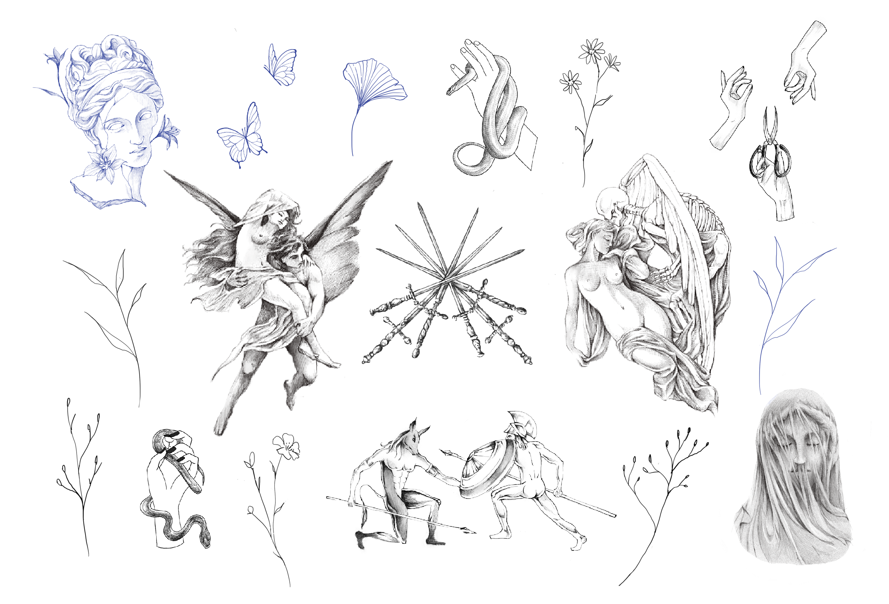
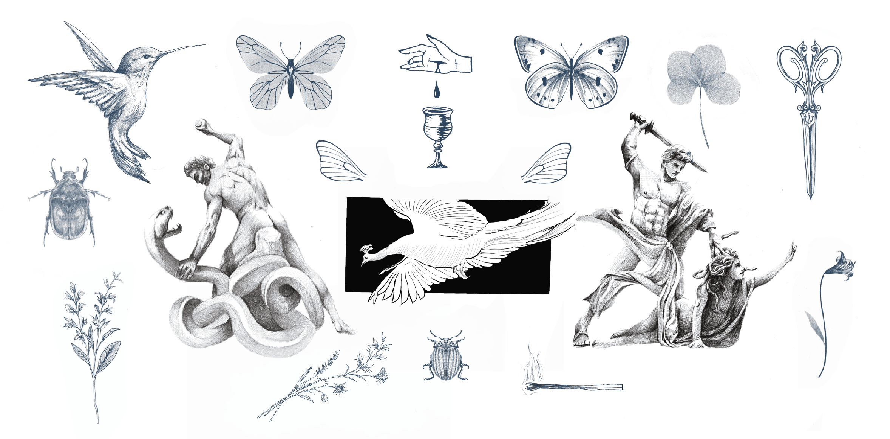
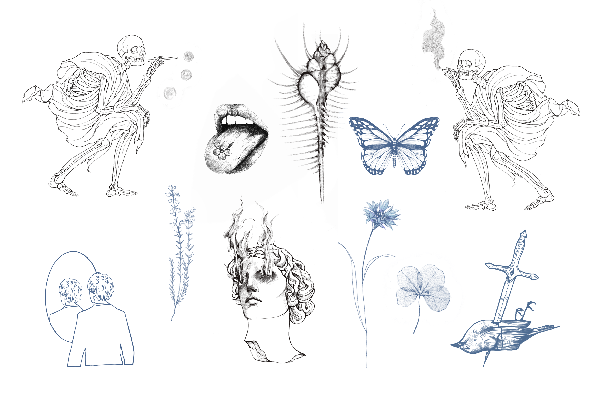
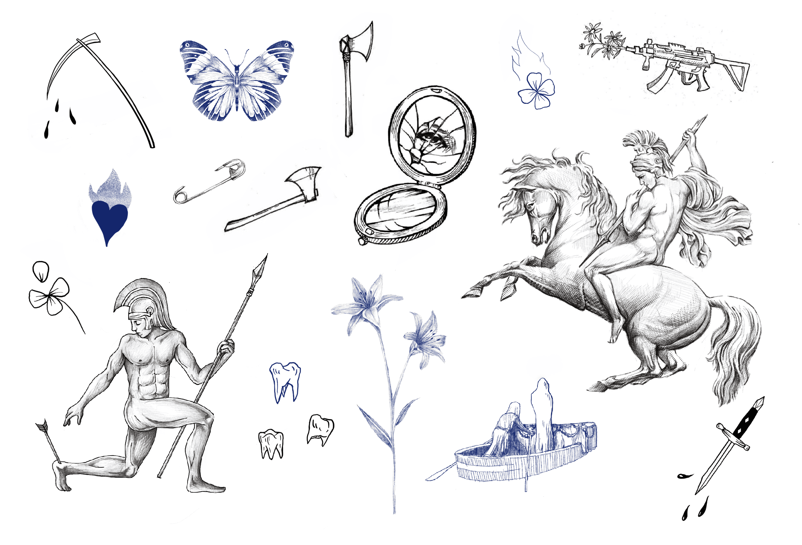
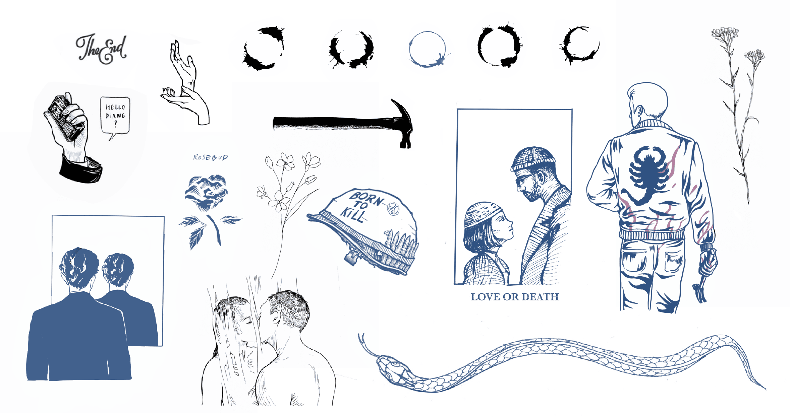
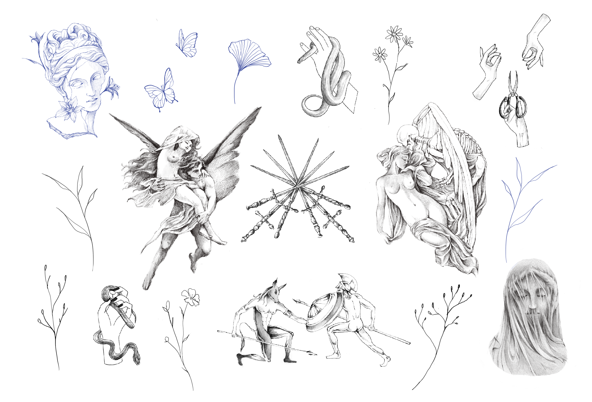
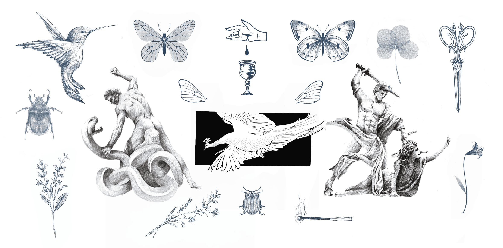
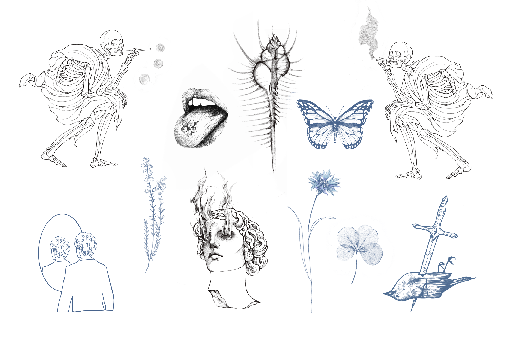
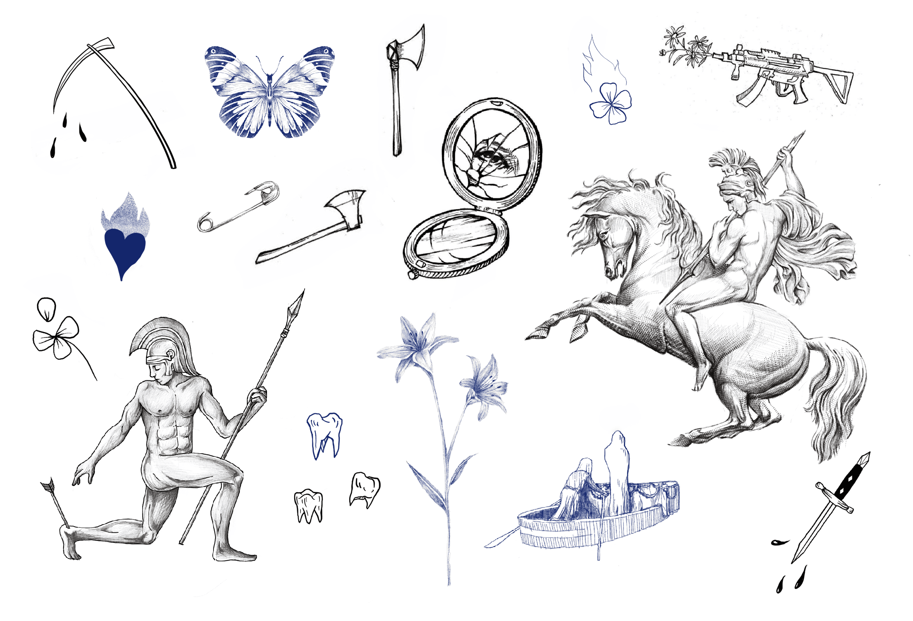
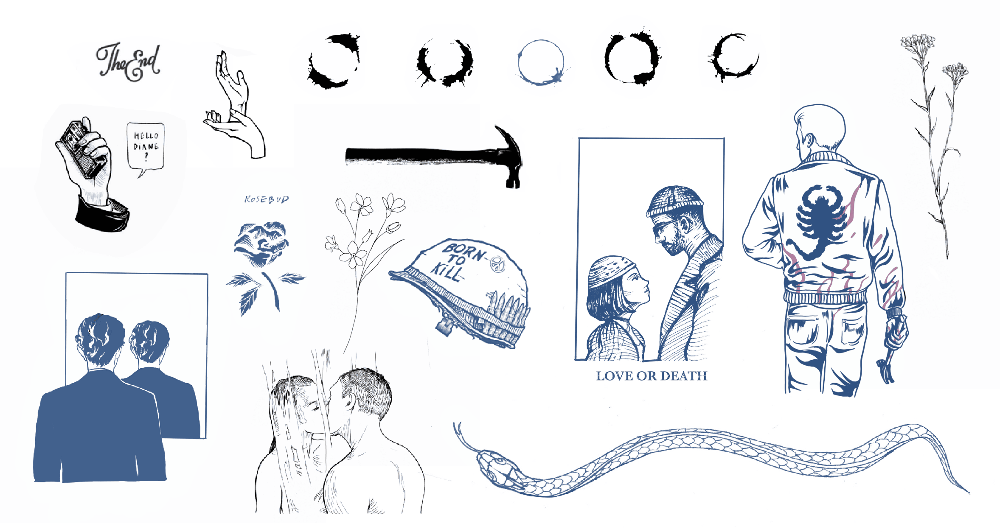

Flash book
To reserve a flash, please contact me by e-mail and send a screenshot of the design you're interested in, if it isn't already marked with a symbol indicating that it's already tattooed or reserved. You can also give an estimate of the size you'd like, even if these are usually already the right size. Finally, specify the location on your body where you'd like to get a tattoo by making a nice sketch using the body silhouettes provided in the contact tab.

 









Photographies

Informations

BEFORE:
We recommend that you do not drink alcohol, are not under the influence of drugs and are well rested the day before your appointment. Please let me know in your e-mail if you are taking any medical treatments, in this case anticoagulants or aspirin, which increase the risk of bleeding and slow healing.
AFTER:
I generally apply double-skin dressings, which can be kept on the tattoo for up to 3 days. Showers are therefore not a problem, as long as the dressing remains waterproof, and no drops of water or other forms of moisture can settle underneath the film. Once the 3 days have elapsed, the dressing can be removed, and treatment can begin. To clean the tattooed area, use a pH-neutral soap, which will be less aggressive. Pat dry with a clean towel. Moisturize your tattoo twice a day, always with clean hands, using pharmaceutical products such as Cicatryl or Cicaplast, but you can also moisturize with more natural products such as coconut oil or shea butter. Just apply a small dab, then massage well into the skin for deep hydration. Moisturizing should be carried out over the whole month, to ensure optimal healing. Bathing, swimming in the sea/pool, sauna and hamam should be avoided for the duration of the healing process. As a tattoo is a wound in the skin, humidity and bathing in any stagnant water are risky, and can cause the tattoo to smudge, or even worse, become infected. The sun should also be avoided during the first month of healing. Just cover or avoid exposure. Once the first month of healing is over, we always protect it from the sun with SPF 50 sun cream, which will help keep it clean, intense and saturated for longer. Once the tattoo has healed (within a month) I'm keen to receive healed photos, which will help me enormously in my progress, as well as allowing me to tell you if it will need retouching, which I do free of charge up to a year after the first stitch. If you have any problems or minor concerns, please feel free to contact me by e-mail, and I'll be happy to answer any questions you may have.
About

At the crossroads of cinema and architecture, my passion has become entangled with the art of tattooing, where I also enjoy stamping blood from ink in the skin of others, marking a memory, a ritual. Influenced by tales, mythologies, herbariums, curiosities and stories told in film or literature, I offer a catalog of flash from my universe, ready to be adopted, just as you would keep an extract from a tale, or wear embroidery as an adornment. I'm also available to put my pencil stroke to good use on your personal projects, to help your ideas blossom in our collaboration.
Contact

In order to carry out a project together, whether to book a flash or develop a personal project, I will need a certain amount of information, to be sent in the content of the e mail:
- A screenshot of the flash you're interested in OR Reference images for your personal project. Whether it's a style you like, a shape, drawings or reference of existing tattoos. As much information as possible will help me understand what you want.
- The size in cm you'd like (this can be a range)
- The desired position on your body, which you can illustrate by showing directly on the silhouettes below.
All this information will enable me to set an appropriate budget. Once we've agreed on a price range, I'll let you know when I'll be available. If we agree on an appointment, you'll be asked to pay a deposit to reserve the slot. This deposit serves as a guarantor, for both of us, to confirm that the appointment has been noted and will be insured by both parties. The deposit is deducted from the final price of the tattoo. Appointments can be cancelled or rescheduled free of charge up to 48 hours beforehand. Once the 48-hour limit has passed, the deposit will be retained to compensate for unforeseen cancellations. This deposit also serves as a guarantor and remuneration for personal projects, which involve a greater or lesser amount of drawing time that also needs to be recognized in a tattoo artist's work. That's why I only send the drawing the day before the agreed appointment (I make exceptions when it's your first tattoo). I will of course be available and open to modifying the design until complete satisfaction on d-day. Indeed, working on the design face-to-face makes it much easier to understand the customer's expectations.